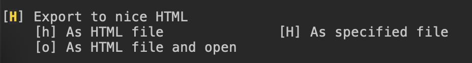

Nice Org to HTML pipeline
Table of Contents
tl;dr
This package generates pretty, readable, responsive websites from .org files and Emacs themes. You can optionally specify a header, footer, and additional CSS and JS to be included. To see the default output, for my chosen themes and with no header, footer or extras, view this README in your browser here. If you're already there, you can find the GitHub repo here.
To see an example with a basic header and footer, you can view my personal site here.
About this package
This package defines an Emacs pipeline for exporting Org files, or publishing Org projects, to HTML. The generated HTML is optimized for readability and responsiveness and is enriched, compared to the Org Mode defaults. Further, the pipeline enables easy customization by users, leveraging the wide variety of themes already defined for Emacs. This is achieved by:
- Extracting colors from user-specified themes, inserting these in a CSS template (nice-org-html.css), and injecting the result into a
<style>element. - Inserting toggle-buttons for light- and dark-mode viewing, and a click-to-jump table-of-content view, governed by the included scripts (nice-org-html.js).
- Extending the default org-to-html export backend to include copy-to-clipboard buttons for source blocks.
- Injecting optional, user-defined HTML header and footer, CSS styling and JS scripts, for a customized look-and-feel.
How to use it
- Obtain the package source files and add them to your Emacs load path.
Add something like this use-package snippet to your configuration file:
(use-package nice-org-html :ensure nil ; if added manually :hook (org-mode . nice-org-html-mode) :config (setq nice-org-html-theme-alist '((light . solo-jazz) (dark . tomorrow-night-eighties))) (setq nice-org-html-default-mode 'light)
- Note, if values for these variables are not specified, the default viewing mode will be
'darkand the default mode-associated themes used for generating CSS will be the "tsdh-" themes distributed with GNU Emacs. - After loading this package and hooking nice-org-html-mode to org-mode, when you open an Org buffer, nice-org-html-mode will activate.
If you then interactively export your Org buffer via the dispatcher (C-c C-e), you will be presented with options to export to 'nice HTML', in addition to the basic HTML export options:

- When exporting to 'nice HTML', you will be prompted for (optional) header, footer, CSS, and JS filepaths. If specified, the contents of those files will be injected, accordingly, into the generated HTML.
These variables may also be set globally, and then used or overridden during interactive export. For example:
(setq nice-org-html-header "path/to/your/header.html") (setq nice-org-html-footer "path/to/your/footer.html") (setq nice-org-html-css "path/to/your/style.css") (setq nice-org-html-js "path/to/your/script.js")
This package is particularly well-suited to publishing Org projects, as websites comprised of many linked pages. The included publishing function,
nice-org-html-publish-to-html, relies on global values for all of the above variables. To use it, in specifying the value oforg-publish-projects-alist, for a given project just specify:;; ... :publishing-function #'nice-org-html-publish-to-html ;; ...
For more granular per-project configuration, there is a publishing-function-generating macro,
nice-org-html-make-publishing-function, which takes values for all of the above configuration variables, and defines-then-returns a publishing function unique to that invocation. For example, your per-project configuration - i.e. the value oforg-publish-projects-alist- may look something like this:`(("project-x/files" :base-extension "org" :base-directory "path/to/source-x/" :publishing-directory "path/to/target-x/" ;; ... :publishing-function ,(nice-org-html-make-publishing-function '((light . solo-jazz) (dark . tomorrow-night-eighties)) 'dark "path/to/your/header.html" "path/to/your/footer.html" "path/to/your/style.css" "path/to/your/script.js")))
Things to keep in mind
- The HTML specified by
nice-org-html-headerandnice-org-html-footerwill inherit the package default styling, unless further styling for these is defined in the file specified bynice-org-html-css. - For easy CSS customization, the contents of each user-specified HTML file are wrapped together in a
<div>element; with id = 'injected-header' and id = 'injected-footer', respectively, and both with class = 'injected'. - The CSS specified by
nice-org-html-cssmay also use the CSS variables defined in nice-org-html.css, which ultimately refer to Emacs face attribute values determined by your chosen themes. - The CSS specified by
nice-org-html-cssmay override the default styling.
Credits
- Shi Tianshu's org-html-themify provided the basic model for CSS interpolation.
- Various stackoverflow posts were of great help, but alas, I've lost the links.